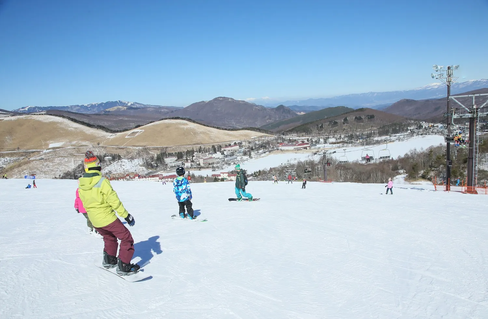
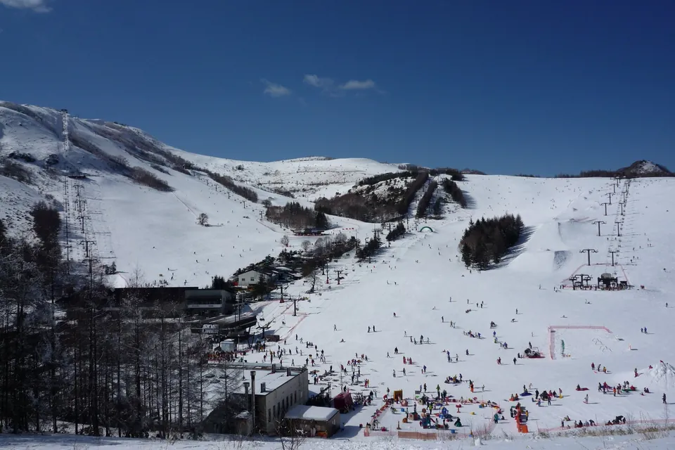

学校のスキー教室、部活・サークルの冬合宿、企業の冬の社員旅行に。周辺の5つのスキー場へ車で約5〜20分。日替わりでゲレンデを選べます。車山高原SKYPARKのリフト引換券は、館内で割引価格にて販売しています。


車で約5〜20分の範囲に5つのスキー場。学年やレベル、天候に合わせて選べます。
車山高原SKYPARKのリフト引換券を割引価格で販売。枚数・日数はご相談ください。
白樺湖ロイヤルヒルはエリアで唯一ナイター営業を実施（営業日は要確認）。
グループ向け和室20畳は6〜10名。班・チーム単位でまとまって泊まれます。
20名以上の団体のお食事は大広間（本館3階）で。11名以上は2食付プランに対応。
大型バス5台分の駐車スペース。ご利用は事前にご相談ください。
ホテルからの所要時間は、山幸閣の案内に基づく通常時の目安です（積雪・路面状況により変わります）。スキー場の情報は2026年9月時点の各スキー場・スキー学校の公式サイトに基づきます。営業期間・料金・団体の受け入れ条件は、シーズンごとに各スキー場の公式情報をご確認ください。
車山斜面に広がるオープンワイドなゲレンデ。8コース・最長滑走2,000m・標高差365m。造雪設備あり、無料駐車場 約1,500台。
エリアで唯一ナイター営業を実施（営業日は要確認）。初級から上級まで。
全面スノーボードOK。八子ヶ峰を中心に横に広いゲレンデ。13コース・最長滑走1,800m。
スキーヤー専用ゲレンデ（スノーボード不可）。全9コース・最長2,100m、降雪機あり。
100人乗りロープウェイで標高約2,240mへ。最長滑走約4,000m・標高差477m。大型バスも駐車無料。
時刻は目安です。レッスンは各スキー場のスキースクールへのお申し込みが必要です。ホテルからゲレンデへの送迎はありません。貸切バス・自家用車でご移動ください。
標高約1,400mの高原です。参考として、標高の近い気象庁アメダス野辺山（標高1,350m）の1月の平均気温は−5.3℃、日最低気温の平均は−12.2℃です（1991〜2020年の平年値）。防寒具・手袋・帽子をご用意ください。そり・雪遊びは、白樺リゾート ポタスノーランドでも楽しめます。
人数・日程・ゲレンデのご希望をお知らせください。リフト引換券の枚数もご相談ください。
電話受付 9:00〜21:00 ／ FAX 0266-68-2092